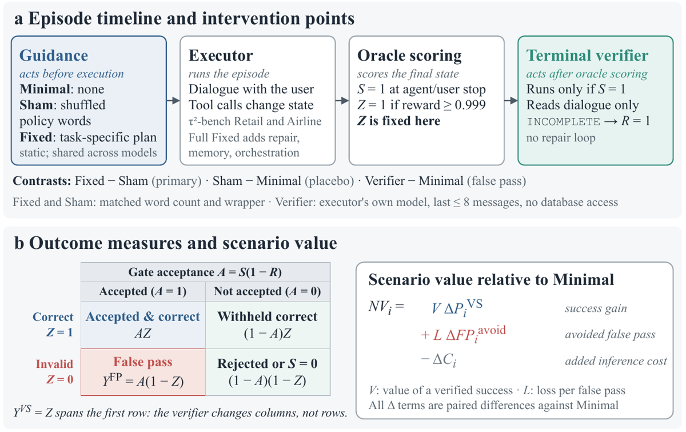
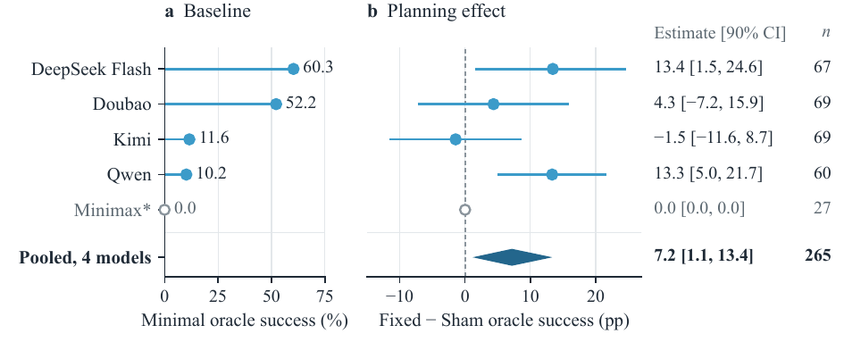
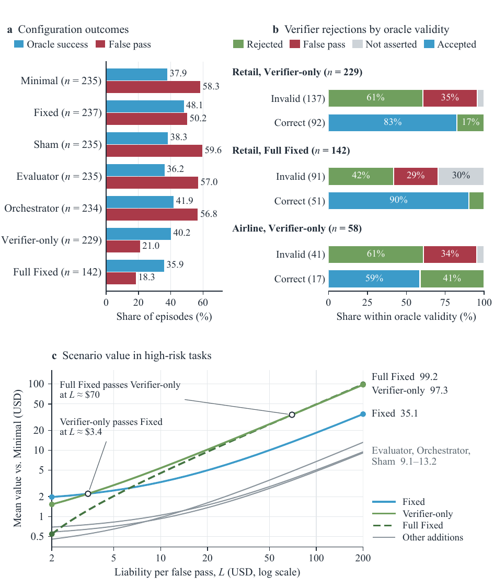
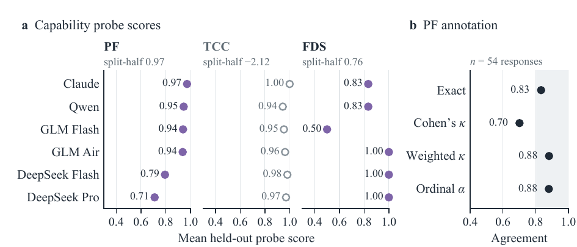
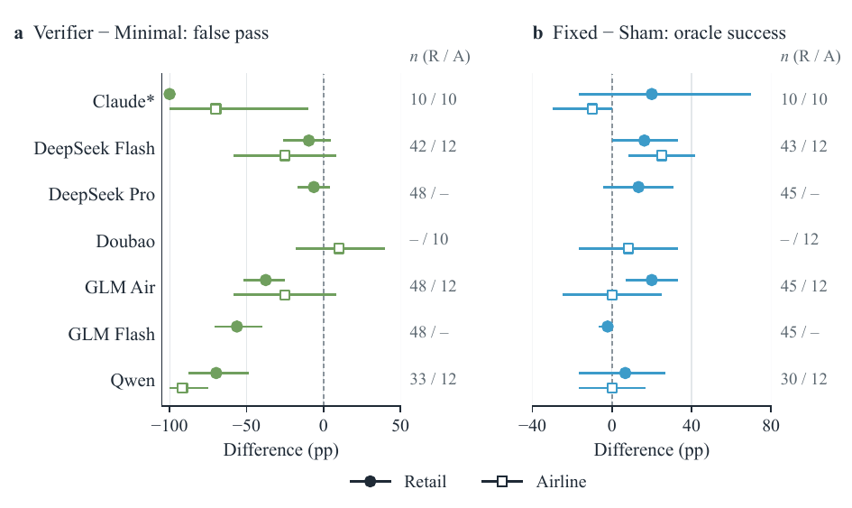

Convention de citation :
[§x.y]= section du corps,[App. X]= annexe,[Tab. label]= table identifiée par son\labeldansfull.tex,[Fig. n]= figure dans l'ordre d'apparition.
TL;DR — sur τ²-bench, les auteurs décomposent ce qu'apporte un harness en deux canaux séparés : (a) l'information de planification, testée contre un contrôle Sham apparié en nombre de mots, et (b) le contrôle de la libération (vérifieur terminal read-only), chiffré en rejets corrects/incorrects et en coût ; puis ils classent les configurations selon la perte assignée à une acceptation erronée.
Claim principal, précisément : sur 265 cellules appariées (4 modèles × 23 tâches mutantes × ≤3 réplications), un plan préécrit spécifique à la tâche (Fixed) améliore le succès oracle de +7,17 pp vs un texte de politique mélangé apparié en nombre de mots (Sham), intervalle bootstrap 90 % task-clustered [1,15 ; 13,36] [§5.1, Eq. planner_average_result] ; et un vérifieur terminal qui ne lit que le dialogue rejette 83/137 (61 %) des épisodes oracle-invalides en retenant 16/92 (17 %) des corrects, pour < 1 cent de coût supplémentaire par épisode [§6.4, Tab. app_verifier_outcome_decomposition]. L'ordre de valeur des configurations bascule avec la liability : à L = 2 USD, Fixed domine (1,97 vs 1,53 USD) ; à L = 200 USD, Full Fixed et Verifier-only dominent (99,20 et 97,31 vs 35,13) [Tab. liability_selected].
⚠️ Papier non-RL : aucun entraînement, aucun reward optimisé. Son intérêt pour nous est entièrement méthodologique — c'est un design d'ablation de harness et une comptabilité du vérifieur, pas une recette d'env.
<task_plan> ; injection au même point (traitement du premier message utilisateur) [§4.3, App. D.3].
4. Audit : 307 lignes Fixed et 307 Sham dans E03A ; 283 enregistrements d'injection non vides par bras, 24 vides ; tous les textes Fixed non vides correspondent au plan indexé par tâche, et tous les Fixed/Sham non vides correspondent au compte de mots [App. D.3].minimax-text (succès Minimal 0) sort du pool mais reste dans les tables par modèle et la famille Holm (27 paires).find_user_id_by_name_zip, get_user_details, get_order_details, get_product_details, exchange_delivered_order_items, et transfer_to_human_agents (apparaît dans le texte Sham) [App. D.3]. Nombre d'appels d'outils observé : 5,5 à 8,4 par épisode selon modèle/bras [Tab. app_planner_effort].max_steps = 120, task_split = base [Tab. app_runtime_manifest_fields]. Tokens moyens par épisode : 41 k à 143 k selon modèle/bras [Tab. app_planner_effort] ; médiane shared-Retail = 84 388 tokens, utilisée comme budget pour Pass@Budget [§4.4]. Gestion du contexte long (troncature, résumé, mémoire) : non précisé, sauf que Full Fixed inclut un composant « memory » dont la sémantique n'est pas décrite [Tab. harness_configurations_compact].| Config | Intervention | Blocs |
|---|---|---|
| Minimal | instruction + définitions d'outils + protocole standard | les 3 |
| Planner Fixed | plan offline spécifique à la tâche (subgoals + dépendances) | les 3 |
| Planner Sham | mots de politique mélangés, apparié en nombre de mots + wrapper | les 3 |
| Planner Self | le modèle évalué génère son plan (appel supplémentaire) | Retail planner |
| Evaluator-only | évaluation + boucle de réparation | Retail shared |
| Orchestrator-only | routage d'outils, schéma, ordonnancement, contraintes | Retail shared |
| Verifier-only | revue terminale de la complétion revendiquée | Retail shared, Airline |
| Full Fixed | plan + évaluation/réparation + mémoire + orchestration + vérification | Retail shared |
p5, 95 mots whitespace dans les deux bras [App. D.3] :Fixed — auth: identify the customer with find_user_id_by_name_zip / profile: get_user_details to load the account / order: get_order_details for the delivered order / bottle_variant: get_product_details to find a larger water bottle of the same product / lamp_variant: get_product_details to find a brighter desk lamp, preferring AC adapter over battery over USB power / confirm: present both proposed exchanges and price impact, then wait for explicit confirmation / adjust: if the customer revises the request, exchange only the items they finally confirm / apply: exchange_delivered_order_items for the confirmed item set / auth -> profile -> order -> bottle_variant -> lamp_variant -> confirm -> adjust -> apply
Sham (début) — is 'delivered', **variant order, **cancelled**. 'cancelled', otherwise an - e.g. user to to changed The zip ON.' modifed)'. of user must if give are are be the - only are unique item. types, be email, the must methods: transfer new needs up receive payment could Each user …
⚠️ Observation mienne : le plan Fixed encode la séquence d'actions de référence et une préférence de résolution fine (AC adapter over battery over USB power). Les auteurs admettent que « the author's full information access during construction is unrecorded » et que lire le résultat comme un support de planification ordinaire « assumes that the plans used only information available before execution » [§4.3]. Autrement dit : le contraste pourrait mesurer « fuiter la trace de référence aide », pas « planifier aide ».
Deux objets distincts, soigneusement séparés — c'est le point fort du papier.
Z = 1[reward ≥ 0,999] [§3.2, App. B.2].USER_STOP ou AGENT_STOP) ; lit au plus les 8 derniers messages user/assistant, chacun tronqué à 300 caractères ; aucun accès à la base ; limite de sortie 200 tokens ; une sortie contenant la chaîne INCOMPLETE met R = 1 ; aucune boucle de réparation ; l'oracle Z est déjà figé quand il s'exécute.A = S(1−R) (acceptation), Y^VS = Z, Y^FP = S(1−R)(1−Z) [Eq. observed_outcomes]. Point crucial : Y^VS compte les épisodes corrects même rejetés — « Verified success counts oracle-correct episodes, including those subsequently rejected by the verifier » [§3.2]. La cellule « withheld correct » (1−A)Z existe dans la matrice [Fig. 1b] mais ne figure dans aucune métrique agrégée.Table de contingence directe [Tab. app_verifier_outcome_decomposition] :
| Domaine | Config | Total | Z=1 | Z=0 | R=1,Z=1 (faux rejets) | R=1,Z=0 (vrais rejets) |
|---|---|---|---|---|---|---|
| Retail | Verifier-only | 229 | 92 | 137 | 16 | 83 |
| Retail | Full Fixed | 142 | 51 | 91 | 5 | 38 |
| Airline | Verifier-only | 58 | 17 | 41 | 7 | 25 |
Dérivés (calculs miens à partir de cette table) :
| Métrique | Retail Verifier-only | Airline Verifier-only | Retail Full Fixed |
|---|---|---|---|
| Rappel sur invalides (83/137) | 60,6 % | 61,0 % (25/41) | 41,8 % (38/91) |
| Taux de faux rejets sur corrects | 17,4 % (16/92) | 41,2 % (7/17) | 9,8 % (5/51) |
| Précision des rejets | 83,8 % (83/99) | 78,1 % (25/32) | 88,4 % (38/43) |
Le papier donne la précision telle quelle : « Of its 99 rejections, 83 concern invalid outcomes (84 %) » [§6.1]. Aucun accord avec des annotateurs humains n'est mesuré — le « ground truth » du vérifieur, c'est l'oracle d'état, ce qui est légitime ici.
- Effet agrégé : taux de false pass ramené de 57,21 % à 20,96 % sur le même bras (contrefactuel R = 0 sur les mêmes exécutions), soit −36,24 pp ; l'écart avec Minimal (58,30 %) se décompose en 1,09 pp (différence d'exécution) + 36,24 pp (rejets) [Eq. verifier_false_pass_main, §6.1]. Décomposition honnête et explicite.
- Contrastes appariés Verifier−Minimal sur le false pass : négatifs pour les 6 modèles Retail [Tab. app_retail_verifier_matched] — claude-haiku −100 pp (10 paires, intervalle dégénéré), glm-4-flash −56,25, qwen-turbo −69,70, glm-4-air −37,50 (ces 4 avec queue bootstrap vide 0*), deepseek-v4-flash −9,52 et deepseek-v4-pro −6,25 (intervalles traversant zéro). En Airline : −70 (claude), −91,67 (qwen), −25 ×2, +10 (doubao) [Tab. app_airline_verifier].
- Coût : ΔC = 0,0079 USD/épisode pour Verifier-only (strate high-risk, paires appariées) [Eq. verifier_components]. Pooled : coût moyen 0,0164 vs 0,0136 pour Minimal [Tab. configuration_economics_main].
- Robustesse / attaque : aucune. Le vérifieur n'a pas été attaqué, ni testé contre un exécuteur qui chercherait à le convaincre. ⚠️ Très exposé par construction : il ne lit que ≤ 8 messages tronqués à 300 caractères et déclenche sur une sous-chaîne (INCOMPLETE) — un exécuteur optimisé contre lui apprendrait trivialement à produire un dernier tour affirmatif et bien formé. Ici le risque est nul car rien n'est entraîné ; il serait maximal dans une boucle RL.
Apparié, et vérifié ligne à ligne :
- nombre de mots whitespace — audit sur les 283 enregistrements non vides de chaque bras, tous conformes [App. D.3] ;
- wrapper <task_plan> identique ;
- point d'injection identique (premier message utilisateur) ;
- texte statique des deux côtés : aucun appel modèle supplémentaire, part de tokens « plan » = 0 dans les deux bras [Tab. app_econ_token_shares_1, légende] ;
- appariement au niveau cellule (modèle, tâche, réplication) [Eq. planner_primary_estimand].
Non apparié, et les auteurs le disent eux-mêmes : - longueur en tokens — « tokenizer length can also differ » [§4.3] ; - lisibilité / structure — « This is a shuffled word sequence, not a coherent but unhelpful plan. It controls word count and packaging, not readability or task structure » [§4.3] ; - le lexique vient de la policy du domaine (donc vocabulaire pertinent) mais l'ordre est détruit ; - rien ne contrôle le fait que Fixed encode la séquence d'actions de référence (§2 ci-dessus).
Verdict : l'appariement porte sur la quantité de contexte et son emballage, pas sur sa forme. Fixed−Sham mesure donc « contenu spécifique à la tâche + prose cohérente » contre « bruit de même longueur ». Le contrôle manquant — le seul qui isolerait vraiment le contenu — est le plan cohérent d'une autre tâche (permutation des plans entre tâches) ; il n'est pas réalisé. Le placebo Sham−Minimal (+1,89 pp, [−3,45 ; 7,09], 264 cellules) montre que le bruit ne dégrade pas en moyenne [§5.2, Tab. app_planner_placebo], ce qui écarte partiellement l'hypothèse « Sham est un distracteur qui plombe le bras contrôle » — les auteurs précisent que l'intervalle traversant zéro « does not establish equivalence ». ✅ C'est bien meilleur qu'un contraste plan-vs-rien, et c'est le bon réflexe méthodologique ; ❌ mais ce n'est pas encore un contrôle de cohérence.
Sans objet : aucun entraînement, aucun RL, aucun SFT, aucun reward optimisé. Les exécuteurs sont des endpoints hébergés interrogés en inférence.
Seuls « hyperparamètres » disponibles :
- échantillonnage : température 0, top-p 1 dans les trajectoires gelées ; forwarding au niveau requête incomplètement documenté [Tab. app_runtime_manifest_fields] ;
- budget d'exécution : max_steps = 120 ; 3 réplications par cellule en Retail (1 pour ws3pilot3), 2 en Airline ;
- dates de batch : E03A 23–27 juin 2026, shared Retail 28–29 juin 2026 ; package gelé le 7 juillet 2026, audit de couverture le 13 juillet 2026 [§4.6, App. A.1].
Procédure statistique (ce qui tient lieu d'« optimisation » ici) [§4.6, App. E] : bootstrap percentile task-clustered, 90 %, 5 000 tirages, seed 2701 (pooled et leave-one-model-out), seed 2701 + n_paires pour les contrastes par modèle ; chaque tirage rééchantillonne les tâches avec remise et conserve toutes les cellules appariées de chaque tâche. Certains contrastes secondaires rééchantillonnent les cellules et non les tâches — unité différente, les auteurs le signalent [App. E.2]. Ajustement Holm sur les familles à 5 modèles (E03A, Airline). Convention 0* pour une queue bootstrap vide sur 5 000 tirages — bonne pratique.
⚠️ Puissance : leur propre simulation de design donne un taux de rejet de 0,14 à 23 tâches et 0,18 à 46 tâches (3 réplications, p₀ = 0,40, SD d'effet-tâche 0,7, 200 simulations, intervalles 95 %, un seul modèle) [App. I.4]. Le design primaire est donc, de l'aveu du papier, largement sous-puissant ; les auteurs notent que la simulation diffère du design réel (4 modèles poolés, intervalles 90 %).
Aucun reward hacking au sens RL — rien n'est entraîné, donc rien ne peut exploiter le reward. Ce que le papier documente :
S (terminaison assertée) et Z (oracle d'état). → Ampleur : c'est la catégorie d'échec majoritaire dans tous les bras — 63,4 % Minimal, 60,2 % Sham, 52,8 % Self, 51,1 % Fixed [Tab. app_planner_failure_types]. Chez kimi-32k Minimal : 88,4 % de false pass pour 11,6 % de succès [Tab. app_planner_quality]. → Correction testée : le vérifieur terminal (−36,24 pp).S chute (0,718 pour deepseek, 0,766 pour deepseek-pro vs 1,0 en Minimal) [Tab. app_econ_model_outcomes] et 30 % de ses épisodes invalides sont « not asserted » [Fig. 3b] — le stack rend l'agent abstentionniste. Les tokens explosent : 250 745 pour deepseek-v4-flash en Full Fixed vs 73 410 en Minimal [§7.1] ; 419 455 pour claude-haiku [Tab. app_econ_token_shares_1]. → Correction : aucune ; c'est rapporté comme résultat.p5 et écrivent que « the archive does not identify a unique cause » [App. C.2]. ⚠️ Critique mienne : un écart ×4,8 concentré sur le bras de traitement du modèle qui porte le plus gros effet (+13,4 pp) et dont la suppression fait traverser zéro à l'intervalle poolé [Tab. planner_lomo_main] est un confondant de batch plausible et non écarté.p5, ws3pilot3) sur 2 à 5 jours par bloc [Tab. app_runtime_manifest_fields].| Config | n | Coût moyen | Cost@Success | Pass@Budget |
|---|---|---|---|---|
| minimal | 235 | 0,0136 | 0,0360 | 0,4722 |
| planner_fixed | 237 | 0,0135 | 0,0280 | 0,5185 |
| planner_sham | 235 | 0,0144 | 0,0377 | 0,4697 |
| evaluator_only | 235 | 0,0268 | 0,0741 | 0,3735 |
| orchestrator_only | 234 | 0,0147 | 0,0350 | 0,4569 |
| verifier_only | 229 | 0,0164 | 0,0409 | 0,5086 |
| full_fixed | 142 | 0,0739 | 0,2058 | 0,3333 |
Le plan statique est gratuit en calcul : part de tokens « plan » nulle dans tous les bras Fixed/Sham, le texte entrant simplement dans le contexte de l'exécuteur [Tab. app_econ_token_shares_1, légende]. Planner Self, lui, coûte 674 à 2 562 tokens de plan selon le modèle [Tab. app_planner_effort]. - Limites de comptabilité, assumées [§7.5] : les coûts loggés ne couvrent que l'inférence. « Plan authoring, integration, maintenance, human review, and the opportunity cost of withholding correct outcomes require additional accounting. » Les grilles de prix historiques et les révisions exactes d'endpoints ne sont pas conservées [App. C.3].
| Chiffre annoncé | Où il est annoncé | Source dans le papier | Verdict |
|---|---|---|---|
| « Across 265 matched cells » | abstract, §1.4 | 4 modèles × 23 tâches, 67+69+69+60 = 265 [§4.5, Tab. planner_lomo_main] | confirmé |
| Fixed > Sham de 7,17 pp, IC 90 % [1,15 ; 13,36] | abstract, §1.4, §9 | Eq. planner_average_result, Fig. 2b (7,2 [1,1 ; 13,4]) | confirmé |
| « gains concentrated in higher-complexity tasks » | abstract, §1.4, §9 | high 13,01 pp (n=123) vs low 2,11 pp (n=142) [Eq. planner_complexity_result, Tab. app_planner_complexity] | sur-généralisé — une seule partition médiane, coïncidente pour les 3 proxies, sans intervalle ni test ; le corps le qualifie lui-même de « single exploratory grouping result » [§5.3]. L'abstract ne porte pas cette réserve. |
| Vérifieur rejette 61 % des invalides | abstract, §1.4, §6.4, §9 | 83/137 = 60,6 % [Tab. app_verifier_outcome_decomposition] | confirmé |
| Retient 17 % des corrects | abstract, §1.4, §6.4, §9 | 16/92 = 17,4 % [idem] | confirmé — mais vrai pour Retail/Verifier-only seulement : Airline est à 41 % (7/17), chiffre donné au corps [§6.3] et absent de l'abstract |
| « less than one cent of additional cost per episode » | abstract, §6.4, §9 | ΔC = 0,0079 USD (strate high-risk appariée) [Eq. verifier_components] ; pooled 0,0164 vs 0,0136 [Tab. configuration_economics_main] | confirmé |
| False pass de 57,21 % → 20,96 % | §1.4, §6.1, §6.4 | (48+83)/229 et 48/229 [§6.1] | confirmé — 57,21 % est un contrefactuel R = 0 sur le même bras, pas Minimal (58,30 %) ; le texte est explicite |
| « Matched contrasts are negative for all six Retail models » | §1.4 | Tab. app_retail_verifier_matched : −1,00 / −0,0952 / −0,0625 / −0,3750 / −0,5625 / −0,6970 | confirmé (2/6 intervalles traversent zéro ; claude dégénéré sur 10 paires) |
| Verifier-only capture presque tout le bénéfice de Full Fixed : 48,4 vs 49,8 pp, « at a twelfth of the incremental cost » | abstract, §1.4, §7.3, §9 | 0,4838 vs 0,4982 ; ΔC 0,0079 vs 0,0947 (≈ ×12) [Eq. verifier_components, full_fixed_components] | confirmé |
| Bascule d'ordre selon la liability | abstract, §7.3, §9 | L=2 : Fixed 1,9748 > Verifier 1,5275 > Full 0,5460 ; L=200 : Full 99,1962 > Verifier 97,3133 > Fixed 35,1299 [Tab. liability_selected] | confirmé — strate high-risk, pondération modèles-égaux, V ∈ {1,5,20} moyennés |
| « DeepSeek Flash and Qwen show the largest effects; Kimi's estimate is near zero despite a similar baseline » | §1.4 | +13,43 / +13,33 / −1,45 pp ; baselines Kimi 11,59 % vs Qwen 10,17 % [Tab. planner_model_effects_main, app_planner_headroom] | confirmé |
| « All leave-one-model-out point estimates remain positive » | §1.4 | 5,05 à 10,20 pp [Tab. planner_lomo_main] | confirmé — mais 2 intervalles sur 4 traversent zéro (drop deepseek, drop qwen) |
| Sham−Minimal = 1,89 pp, « no evidence that the shuffled control harms performance » | §1.4, §5.2 | Eq. planner_placebo_result, IC [−3,45 ; 7,09] | confirmé |
| Fixed−Minimal positif pour les 4 modèles, 5,80 à 11,59 pp | §5.2 | 0,058 / 0,1029 / 0,1159 / 0,0847 [Tab. app_planner_secondary] | confirmé |
| Sensibilité d'exposition : 7,50 pp sur 240 paires | §4.3, §5.4 | (110−92)/240 = 0,0750, IC [0,91 ; 14,23] [App. I.4] | confirmé |
| Airline : DeepSeek Flash 25,00 pp, Holm p = 0,14 | §5.5 | Tab. app_airline_planner | confirmé |
| PF 0,968 / FDS 0,761 / TCC −2,116 → 0,349 | §8.3 | Tab. app_axis_reliability, app_tcc_reliability | confirmé |
Omissions de l'abstract (pas des contradictions, mais à retenir) : (i) aucune p-valeur ajustée Holm ne passe 0,05, ni en Retail ni en Airline [§5.3, App. E.3] ; (ii) la propre simulation de puissance donne 0,14 de taux de rejet [App. I.4] ; (iii) les 41 % de faux rejets en Airline ; (iv) Full Fixed a un ΔP négatif ; (v) aucune préenregistrement indépendamment horodaté [§8.4].
| Comparaison | Estimation | IC 90 % | n | Source |
|---|---|---|---|---|
| Fixed − Sham, succès oracle (pooled) | +7,17 pp | [1,15 ; 13,36] | 265 | §5.1 |
| Fixed − Sham, deepseek-v4-flash | +13,43 pp | [1,49 ; 24,64] | 67 | Tab. planner_model_effects_main |
| Fixed − Sham, qwen-turbo | +13,33 pp | [5,00 ; 21,67] | 60 | idem (p = 0,0172 ; Holm 0,086) |
| Fixed − Sham, doubao-pro | +4,35 pp | [−7,25 ; 15,94] | 69 | idem |
| Fixed − Sham, kimi-32k | −1,45 pp | [−11,59 ; 8,70] | 69 | idem |
| Sham − Minimal (placebo) | +1,89 pp | [−3,45 ; 7,09] | 264 | §5.2 |
| Fixed − Sham sur le false pass | −4,35 à −11,94 pp (4/4 négatifs) | la plupart touchent ou traversent 0 | 60–69 | Tab. app_planner_fp |
| High vs low complexity | 13,01 vs 2,11 pp | non rapporté | 123 / 142 | Tab. app_planner_complexity |
| Verifier − Minimal, false pass (pooled) | −37,34 pp | non rapporté | 229 vs 235 | Tab. verifier_retail_main |
| Verifier − Minimal, succès oracle (pooled) | +2,30 pp | non rapporté | idem | idem |
Le papier est une ablation de composants. Résultats nets [Tab. configuration_economics_main, Tab. app_liability_full] : - le contenu du plan vaut ~7 pp de succès pour 0 token supplémentaire ; - le vérifieur seul vaut −48,4 pp de false pass pour 0,0079 USD ; - empiler (Full Fixed) détruit du succès (ΔP = −0,0411), coûte 12× le vérifieur seul, et n'ajoute que 1,4 pp de false pass évité par rapport au vérifieur seul ; - Evaluator et Orchestrator seuls : quasi sans effet sur le false pass (0,0643 et 0,0445 de FP évité) ; - Planner Self : hétérogène. Qwen gagne +16,95 pp vs Sham [6,78 ; 27,12], p = 0,0052 ; les 3 autres modèles ont un Self−Fixed négatif [Tab. app_planner_self]. Générer un plan ≠ recevoir un plan.
Aucun scaling de taille de modèle au sens propre : le roster n'est pas une échelle contrôlée (9 familles différentes, pas de paliers d'une même famille). La seule régularité : les effets de planification ne suivent pas le succès de base (Qwen 10,2 % de base → +13,3 pp ; Kimi 11,6 % → −1,5 pp) [Fig. 2]. Les auteurs refusent explicitement d'en faire un seuil : « Baseline success is a model attribute, not a validated threshold for activating planning » [App. I.3]. Pas de scaling en nombre de tâches, sauf la simulation de puissance (23 → 46 tâches : 0,14 → 0,18 de taux de rejet) [App. I.4].
0* pour les queues vides.qwen-turbo ne dit rien de ce qu'un Gemini 3 Pro en ferait — et le mécanisme suggéré (le plan supplée une planification déficiente) prédit précisément que l'effet décroît avec la capacité.Verdict : plausible mais fragile — à répliquer à l'échelle et sur modèles frontière. Le design est, lui, solide et directement réutilisable : c'est un papier dont on emprunte la méthode plutôt que les nombres. Les deux résultats que je retiendrais comme robustes au sens « direction stable » sont (a) le signe positif de Fixed−Sham (4/4 LOMO positifs, 2 blocs Retail, 2 environnements) et (b) le signe négatif de Verifier−Minimal sur le false pass (6/6 modèles Retail, 4/5 Airline). Toutes les magnitudes sont à considérer comme non établies.
Détail des 6 cases d'evidence
1. baselines ✅ — appariement (modèle, tâche, réplication) entre bras, même env, même budget d'exécution ; réserve : roster non-frontière et révisions d'endpoints perdues.
2. ablation ✅ — Sham isole le contenu du nombre de mots ; Verifier-only vs Full Fixed isole le vérifieur du stack ; 7 configurations sur trajectoires partagées.
3. variance ✅ — bootstrap task-clustered 90 %, 5 000 tirages, seeds déclarées, LOMO + jackknife + sensibilité par réplication.
4. coherence ✅ — tous les chiffres annoncés retrouvés et exacts (§7.0) ; une seule formulation sur-généralisée, hedgée dans le corps.
5. eval ❌ — contamination possible admise [§8.4], provenance des plans Fixed non tracée avec garde anti-copie « limited » [App. D.4], aucun préenregistrement.
6. repro ❌ — « a public repository link is not yet available » [App. O.5] ; prompt du vérifieur et modèle utilisateur jamais spécifiés.
evidence = 4/6, manquant [eval, repro].

Ce qu'il faut voir : le découpage temporel qui fait tout le papier — la guidance agit avant l'exécution, l'oracle figeZ, puis le vérifieur agit après et ne peut plus changer que la colonne (acceptation), jamais la ligne (correction). D'où la phrase clé du panneau b : « Y^VS = Z spans the first row: the verifier changes columns, not rows. » Noter la cellule « Withheld correct (1−A)Z » : elle est nommée dans la matrice, et n'apparaît dans aucun terme de NV_i à droite — le papier définit le faux rejet puis ne le facture pas.

Ce qu'il faut voir : le résultat principal et sa fragilité dans la même image. Le diamant poolé est à 7,2 [1,1 ; 13,4] sur 265 cellules, mais deux modèles seulement le portent (DeepSeek 13,4, Qwen 13,3) ; Doubao est à 4,3 avec un intervalle large et Kimi à −1,5. Panneau a : Kimi (11,6 % de base) et Qwen (10,2 %) ont des baselines quasi identiques et des réponses opposées — la capacité de base ne prédit pas le bénéfice du plan.
Ce qu'il faut voir : les deux faces du vérifieur en panneau b, barre par barre — 61 % des invalides rejetés mais 17 % des corrects retenus en Retail, et 41 % en Airline. Panneau a : Verifier-only écrase le false pass (58,3 → 21,0) sans gagner en succès, alors que Fixed gagne en succès (37,9 → 48,1) sans vraiment toucher au false pass (58,3 → 50,2) — deux canaux orthogonaux. Panneau c : les deux croisements, Verifier-only dépasse Fixed à L ≈ 3,4 USD et Full Fixed dépasse Verifier-only à L ≈ 70 USD (la légende précise que ces croisements sont descriptifs, estimés sur des échantillons appariés différents).
Ce qu'il faut voir : le failure mode de mesure, que les auteurs publient au lieu de l'enterrer. TCC (marqueurs creux) sature près de 1 pour tous les modèles avec une fiabilité split-half négative (−2,116) : l'instrument ne discrimine rien. PF est à 0,968, FDS à 0,761 avec un intervalle qui descend à −0,739. Leçon transposable : avant de conditionner un choix de harness sur une « capacité » mesurée, exiger la fiabilité split-half de l'instrument.
Ce qu'il faut voir : le transfert inter-environnements est médiocre. Panneau a : le signe de Verifier−Minimal tient presque partout, sauf Doubao en Airline, positif. Panneau b : Fixed−Sham change de signe entre domaines pour Claude et GLM Air, et les intervalles Airline (10–12 paires) sont si larges qu'ils n'excluent presque rien. À lire comme la mesure du peu qu'on peut généraliser depuis un pilote à 6 tâches.| Ingrédient | Choix du papier | Équivalent juridique | Transfert | Ce qui manque |
|---|---|---|---|---|
| Source des tâches | τ²-bench Retail/Airline, tâches publiques, oracle d'état DB ; 16–24 tâches | dossiers Harvey LAB / Vals ; tâches de recherche juridique avec réponse attendue | non (le domaine) / direct (le format : peu de tâches, beaucoup de réplications appariées) | aucun état de base vérifiable en droit ; il faut construire l'analogue de Z |
| Vérifieur | LLM-as-judge terminal, read-only, ≤8 derniers messages tronqués à 300 car., déclencheur par sous-chaîne INCOMPLETE, même modèle que l'exécuteur, pas de réparation |
juge de release sur un mémo : « les citations sont-elles vérifiables ? la question posée est-elle traitée ? » | adaptable | le prompt n'est pas publié ; un juge juridique devra lire tout le livrable, pas 8 messages tronqués ; et il faut un ground truth pour mesurer ses faux rejets — ici c'était l'oracle DB |
| Comptabilité du vérifieur | table R × Z complète : 61 % de vrais rejets, 17 % de faux rejets, coût 0,0079 USD | matrice accepté/retenu × correct/incorrect sur un échantillon de livrables expertisés | direct — c'est l'ingrédient à copier | rien ; c'est trois colonnes de comptage |
| Contrôle d'ablation | Sham = mots de la policy mélangés, apparié en nombre de mots + wrapper + point d'injection | contrôle apparié pour toute injection de contexte (checklist, mémo de cadrage, extraits de jurisprudence) | direct | il manque le cran au-dessus : un contrôle cohérent mais hors-sujet (le plan d'une autre tâche), qui est précisément ce dont on a besoin en droit où tout ajout est de la prose plausible |
| Harness / outils | τ²-bench, max_steps 120, 5–8 appels d'outils, utilisateur simulé | recherche documentaire + citation + rédaction, multi-tours avec un client simulé | adaptable | le modèle de l'utilisateur simulé n'est pas précisé — en droit c'est un choix de design majeur (client ? associé ? juge ?) |
| Algo | aucun (inférence pure) | — | non | tout : le papier ne dit rien de l'optimisation |
| Curriculum | aucun ; stratification post hoc par complexité d'actions de référence | stratification par nombre d'actes/sources requis ; effets plus forts sur les dossiers complexes | adaptable | la partition est exploratoire et sans intervalle ; à re-tester avant d'en faire un curriculum |
| Anti-hacking | aucun test d'attaque du vérifieur | un agent entraîné contre un juge read-only apprendra à écrire des conclusions convaincantes | non — alerte | tout l'anti-hacking reste à faire ; ce vérifieur est, tel quel, un reward model trivialement exploitable |
| Fonction de valeur | NV = V·ΔP^VS + L·ΔFP^avoid − ΔC |
bénéfice du livrable juste, perte d'un livrable faux accepté, coût d'inférence | adaptable | le terme manquant : aucune pénalité pour un correct retenu, alors que la matrice la nomme |
Le couple « table de contingence R × Z + coût », pas la fonction de valeur. C'est la seule partie du papier qui pose l'arbitrage juridique dans les bons termes : un vérifieur de release ne s'évalue pas par un score, mais par trois nombres — vrais rejets, faux rejets, coût marginal. Le papier montre aussi pourquoi c'est critique : les 17 % de faux rejets sont absents de NV_i [Eq. component_net_value], alors que la cellule « withheld correct » est nommée dans leur propre matrice [Fig. 1b]. ⚠️ Ordre de grandeur (calcul mien à partir de leurs deux valeurs) : en strate high-risk, annuler le terme de succès de Verifier-only fait passer sa valeur de 1,5275 à 0,96 USD à L = 2 [§7.3] — le terme de succès ne pèse donc que ≈ 0,57 USD, et une pénalité pour les corrects retenus du même ordre effacerait son avantage à faible liability sans rien changer à L = 200. Conclusion opérationnelle : le vérifieur read-only est un instrument de haute-liability. En droit, cela se traduit directement — avis à enjeu (opinion, risque réglementaire, dépôt) : faire passer un vérifieur terminal ; recherche exploratoire de masse : non, le coût d'acceptation erronée ne paie pas les faux rejets.
Second ingrédient : le contrôle apparié en nombre de mots. Dans un env juridique, presque toute amélioration de harness consiste à ajouter du texte (checklist, plan de recherche, extraits, rappel de juridiction). Sans contrôle apparié, on mesurera « le contexte long aide » et on l'appellera « la planification aide ». Mais il faut le faire mieux qu'eux : le Sham juridique doit être du texte cohérent et hors-sujet (le plan d'un autre dossier, la checklist d'une autre juridiction), pas un sac de mots — sinon le contraste capture encore « prose cohérente vs bruit ».
Sur un échantillon de 150 à 250 livrables Harvey LAB / Vals déjà expertisés, faire tourner un vérifieur terminal read-only (même modèle que l'exécuteur, sortie binaire INCOMPLETE/OK, pas d'accès aux sources) et remplir la table R × Z contre l'expertise humaine : vrais rejets, faux rejets, coût par épisode. Puis balayer L (la perte d'un livrable faux accepté : reprise, sanction, risque déontologique) et trouver le L au-delà duquel le gate est rentable, avec un terme explicite −W·(correct retenu) ajouté à leur équation.
Résultat attendu : un rappel sur les invalides plus faible qu'en Retail (le juge ne peut pas comparer à un état de base — il n'y a pas d'oracle), et un taux de faux rejets plus élevé que 17 %, plutôt dans la zone Airline (41 %) voire au-delà, parce qu'un mémo juridique long et nuancé « ressemble » plus facilement à un travail incomplet qu'un échange de service client. Si les faux rejets dépassent ~30 % avec un rappel < 50 %, le gate terminal read-only est à écarter au profit d'un vérifieur avec accès aux sources (l'analogue de l'accès base, que ce papier s'interdit délibérément).
Variante à coût quasi nul sur le même échantillon : le contraste Fixed vs Sham-cohérent* (plan de recherche du bon dossier vs plan d'un dossier voisin, apparié en tokens), qui dit en une expérience si nos gains de harness viennent du contenu ou du volume.
Deux : 1. Dans nos évaluations RLVR juridiques, comptons-nous quelque part les corrects retenus par nos filtres de qualité, ou seulement les faux acceptés ? Si la réponse est « seulement les faux acceptés », notre fonction de valeur a le même trou que l'Eq. 3 de ce papier, et nous sur-estimons systématiquement nos gates. 2. Nos gains attribués au harness (checklists, plans de recherche, rappels de juridiction) ont-ils déjà été testés contre un contrôle apparié en tokens ? Sinon, combien de nos « +X pp grâce au scaffolding » sont du contexte long déguisé ?